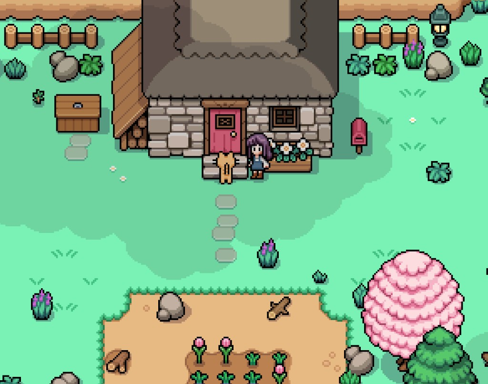
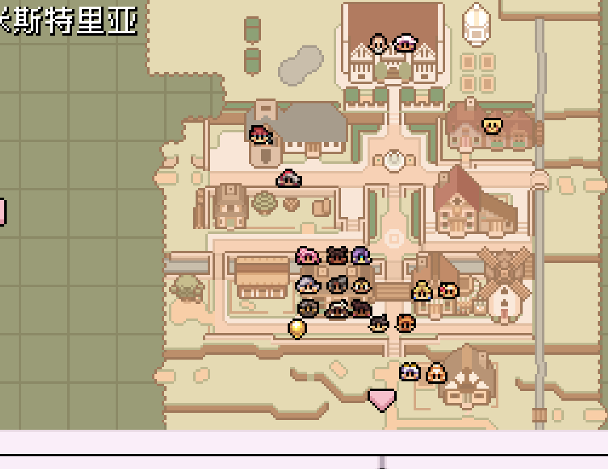
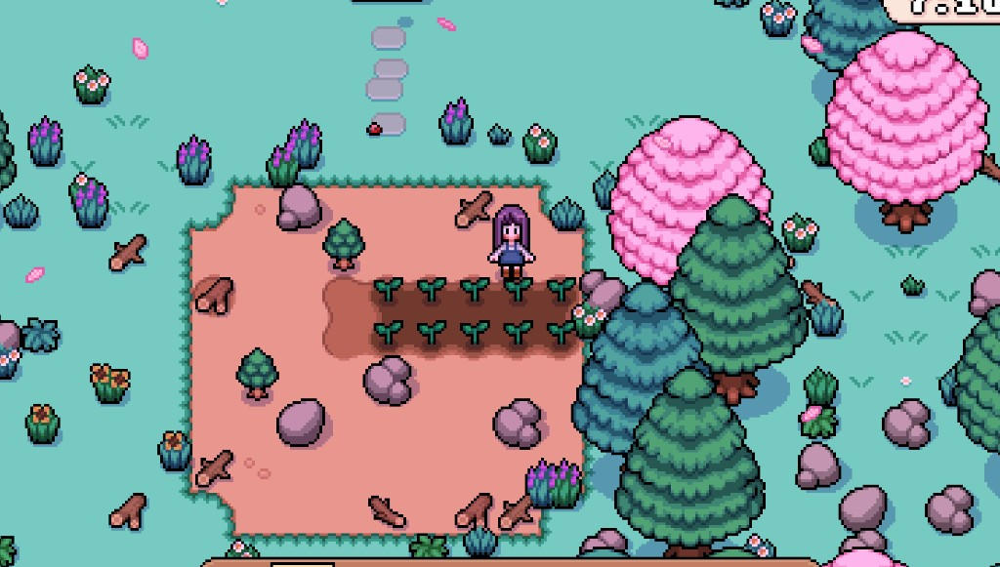

Quick answers
- Daily pet is free friendship.
- Buildings before animals.
- Crops still pay early bills.
- Feed and care add chores—add when mornings are easy.
- Confirm building vendors in your town progress.
Pet first
Our farm cat was the correct “animal system” for weeks. Free, fast, no hay budget.
When to expand
After a carpenter building path and a money cushion. If watering still panics you, wait.
Safe to skip
- Week-one chickens out of FOMO
- Comparing barns to Year 3 showcases
Screenshots from our save
Real Fields of Mistria shots from our first-season play. Captions in English; in-game UI language may differ.




FAQ
No barn yet?
Normal. Keep farming.
Animals required?
No—for a calm first season.
Unofficial fan guide. Not affiliated with NPC Studio. Verify details in your game version.